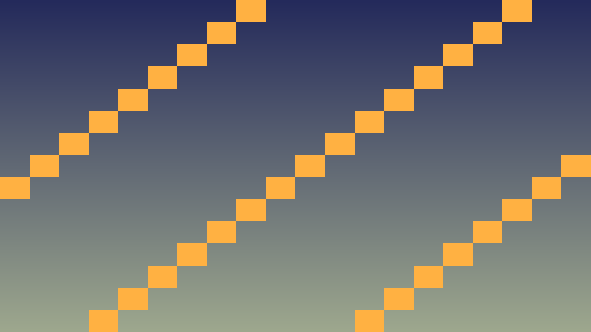
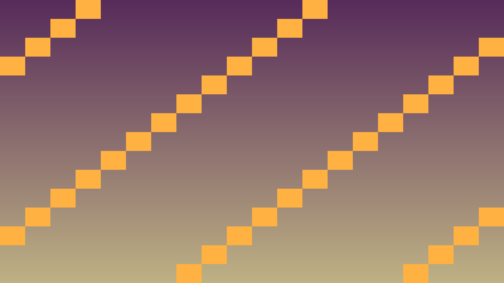

Tavs šīs stundas izaicinājums: Apgūt Godot debugger, breakpoints, un izmantot to, lai atrastu bugs.
Priekšzināšanu robeža: uzdevumos izmanto tikai iepriekš apgūto un šīs lapas teorijas/koda piemēros parādīto. Ja parādās jauna komanda vai rīks, vispirms atrod tās paraugu teorijas blokā.
Godot piedāvā vairākus rīkus problēmu atrašanai:
// Debugging C++ kodā
UtilityFunctions::print("Player position: ", get_position());
UtilityFunctions::printerr("Error: enemy is null!");
UtilityFunctions::push_warning("Suspicious value: ", value);
// Asserts
ERR_FAIL_NULL_MSG(player, "Player not found!");
ERR_FAIL_COND_MSG(hp < 0, "Negative HP!");
// Stack trace dump (debug builds)
#ifdef DEBUG_ENABLED
WARN_PRINT("Function called: " + String(__FUNCTION__));
#endifKritiskais fokuss: šajā stundā nepietiek tikai panākt redzamu efektu editorā. Jāspēj paskaidrot, kura C++ klase glabā stāvokli, kura metode to maina un kā Godot node struktūra šo kodu izmanto.
Pārbaudes pierādījums: UI signāli, audio darbības, debug izvade un publicēšanas sagatave ir sasaistīta ar C++ spēles stāvokli.
#include <godot_cpp/variant/string.hpp>
using namespace godot;
struct PolishCheckpoint {
String lesson = "6.4 Atkļūdošana un profilēšana";
bool uses_cpp = true;
bool connects_ui_signals = true;
bool routes_audio_events = true;
bool verifies_export_build = true;
};70 min darba sadalījums: 1. uzdevums (~20 min) — izveido minimālo piemēru, kas pārbauda šīs stundas galveno ideju; 2. uzdevums (~25 min) — integrē risinājumu tēmas spēles projektā; 3. uzdevums (~25 min) — notestē robežgadījumus, salabo kļūdas un pieraksti secinājumu README vai komentārā. Tālāk redzamie soļi ir detalizēta karte šiem trim uzdevumiem; ja laiks beidzas, papildu pulēšanu atstāj nākamajai reizei.
Izpildi šo darba plānu, lai 6.4 Atkļūdošana un profilēšana rezultāts būtu pārbaudāms C++ GDExtension projektā.
Callable vai reģistrētu C++ metodi.Strategic print statements.
#ifdef DEBUG_ENABLED.Izpildes apstāšana.
Atrod lēnos kodus.
Atrod memory leaks.
scons target=template_debug.

// Defensīva programmēšana
void Player::take_damage(int amount) {
// Validate input
ERR_FAIL_COND_MSG(amount < 0,
"Damage amount must be non-negative, got: " + String::num_int64(amount));
// Log for debugging
UtilityFunctions::print("Player ", name, " taking ", amount,
" damage. Current HP: ", hp);
// Apply damage
hp = std::max(0, hp - amount);
// Sanity check
if (hp < 0) {
UtilityFunctions::printerr("CRITICAL: HP went negative! Resetting to 0");
hp = 0;
}
// Conditional debug
#ifdef DEBUG_ENABLED
if (hp == 0) {
UtilityFunctions::print("Player died at position ", get_position());
}
#endif
emit_signal("damaged", amount);
}